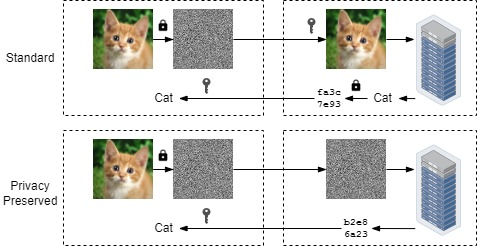
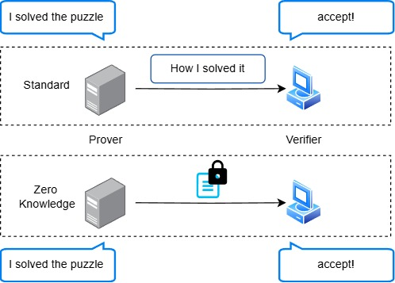

Research Interests
My research advances data privacy and integrity through hardware-software co-design .
I build
efficient systems that make cryptographic privacy and integrity practical.
Privacy-Preserving Computation for End-to-End Data Privacy : I develop
specialized hardware systems to accelerate
privacy-preserving computation . My work includes accelerators for cryptography (e.g., homomorphic encryption), particularly
Garbled Circuits (GC)
[1] ,
[2] ,
which enable accurate private ML inference.

Applying privacy-preserving computation to private inference.
Zero-Knowledge Proofs for Data Integrity : I develop efficient proof systems
and programmable hardware accelerators for zero-knowledge proofs (ZKPs). ZKPs verify data
integrity by proving the correctness of computations without revealing the underlying data.

An example of a zero-knowledge proof.
Activities
2026
[May 4, 2026]
Internship : I was happy to be a Software Engineer Intern at Google.
[May 2026]
Academic Service
Served as a reviewer for IEEE TDSC.
[Apr 2026]
Academic Service
Served as a reviewer for IEEE TDSC.
[Mar 2026]
Academic Service
Served as a reviewer for JSA.
[Feb 2026]
Academic Service
Served as a reviewer for IEEE TDSC.
[Feb 2026]
Talks
Invited talk at UNSW Sydney .
[Feb 2026]
Talks
Presenting our work zkPHIRE at HPCA 2026 .
2025
[Oct 2025]
Talks
Invited talk at Seoul National University.
[Oct 2025]
Academic Service
Organized the 1st ZKARCH Workshop at MICRO 2025.
[Oct 2025]
Talks
Gave a talk at HASP introducing our MTU paper. The MTU talk is available on
YouTube .
[Oct 2025]
Academic Service
Served as a reviewer for IEEE TDSC.
[Fall 2025]
Media Spotlight
Featured in CyberByte: "Overcoming Limitations in Privacy-Preserving Hardware ".
[Sep 2025]
Academic Service
Served as the submission co-chair for ISPASS 2026 .
[Aug 2025]
Academic Service
Served as a reviewer for JSA.
[Jun 15, 2025]
Talks
I was happy to attend ISCA 2025 in
Tokyo to introduce our paper zkSpeed and meet many amazing people.
[May 5, 2025]
Internship : I was excited to begin my summer
research
internship at Intel.
[Apr 2025]
Academic Service
Served as a reviewer for IEEE Transactions on Dependable and Secure Computing (IEEE TDSC).
[Mar 21, 2025]
Our paper zkSpeed on HyperPlonk
ZKP accelerator design was accepted to ISCA 2025.
[2025]
Academic Service
Served as a reviewer for IEEE ISCAS 2026.
2024
[Sep 9, 2024]
Our paper PriViT on private vision
transformers was accepted to TMLR.
[Sep 2024]
Academic Service
I served as a reviewer for the Journal of Information Security and Applications.
[Jun 17, 2024]
Patent
HAAC patent.
[May 7, 2024]
I received the Dante Youla Award 2024 .
Recipient of the Dante Youla Award for graduate research excellence.
[Mar 22, 2024]
Academic Service
Hosted Computer
Architecture Day at NYU .
[Feb 6, 2024]
Talks
Seminar talk at NYU Shanghai.
[2024]
Media Spotlight
Featured by NYU News in "Computer Architecture Day brings new ideas to the forefront of
hardware design."
2023
[Dec 7, 2023]
Academic Service
I served as a reviewer for the Journal of Systems Architecture (JSA).
[Nov 14, 2023]
Academic Service
I served as a reviewer for ISCAS 2024.
[Nov 2023]
Media Spotlight
Mentioned by @cpuTECHandECO for work on domain-specific accelerators.
[Oct 29, 2023]
Academic Service
Hosted HASP 2023 at MICRO .
[Oct 28, 2023]
Talks
Attended DISCC 2023 at MICRO .
Talk on privacy-preserving computation acceleration.
[Sep 2, 2023]
Academic Service
Teaching assistant for ECE-GY 6913 Computing Systems Architecture.
[Jun 19, 2023]
Talks
Attended ISCA 2023 at Orlando World
Center .
Presented HAAC: garbled circuits acceleration. Talk is available on
YouTube .
[Apr 18, 2023]
Our paper on private computing was accepted to CF 2023.
[Mar 17, 2023]
Talks
Talk at Princeton Computer
Architecture Day .
[Mar 9, 2023]
Our paper HAAC was accepted to ISCA 2023.
2022
[fixme]
Jianqiao Mo , Siddharth Garg, Brandon Reagen
IEEE/ACM International Conference on Computer-Aided Design (ICCAD) , 2026
Locus is a framework for exploring and optimizing point-addition hardware for zero-knowledge
proof workloads.
Awards / Honors
[Jul 2026] Scholarship of Outstanding Abroad Students [Oct 2025] Best Paper Finalist, HASP at MICRO 2025 [May 2024] Dante Youla Award for Graduate Research Excellence [2020] NYU School of Engineering Fellowship [2020] Honor Graduate, Bachelor of Science [2020] CMB Bank Scholarship [Oct 2019] Best Paper, IEEE International Workshop on Signal Processing Systems (SiPS) [2018] Samsung Scholarship [2018] Outstanding Student Leader of Nanjing University [Jan 2018] Student Fund Promoting Ambassador of Nanjing University [2017] People's Scholarship [2017] National Scholarship [Sep 2017] Second Prize and Team Leader, Texas Instruments National Electronic Design Competition [...] ACM/IEEE Travel Grants.